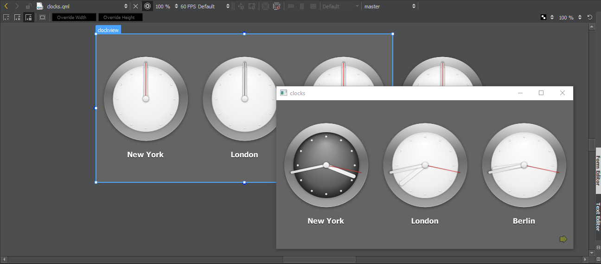

Previewing on Desktop
To preview the currently active QML file on the desktop:
- Select Build > QML Preview.
- Select the (Show Live Preview) button.
- Press Alt+P.

To preview any QML file that belongs to the project, right-click the project name in the Project tab in the Navigator, and select Preview file.
To preview the whole UI, select Show Live Preview when viewing the main QML UI file of the project.
To view the UI in different sizes, select the zooming level on the toolbar.
The frames-per-second (FPS) refresh rate of animations is displayed in the FPS field.